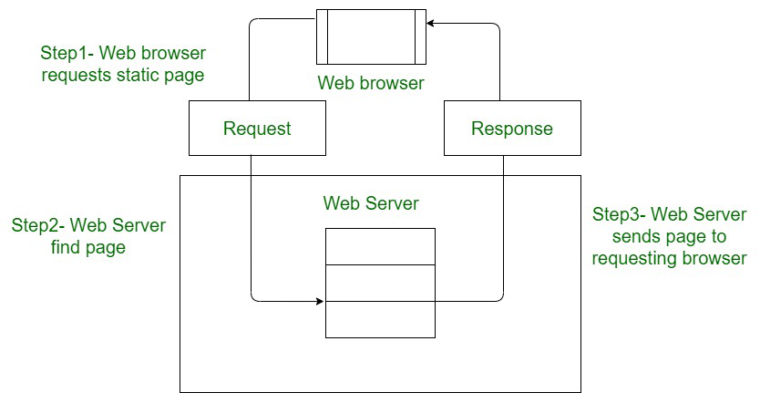

Static Website: In Static Websites, Web pages are returned by the server which are prebuilt source code files built using simple languages such as HTML, CSS, or JavaScript. There is no processing of content on the server (according to the user) in Static Websites. Web pages are returned by the server with no change therefore, static Websites are fast. There is no interaction with databases. Also, they are less costly as the host does not need to support server-side processing with different languages.
